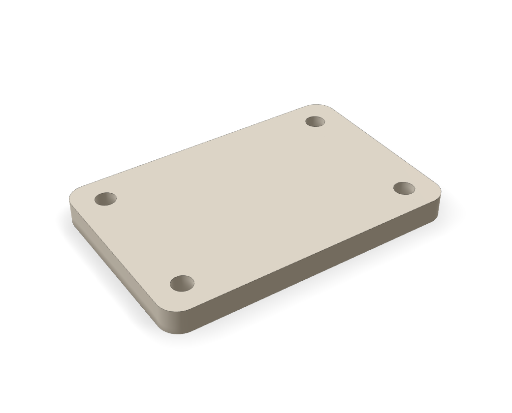
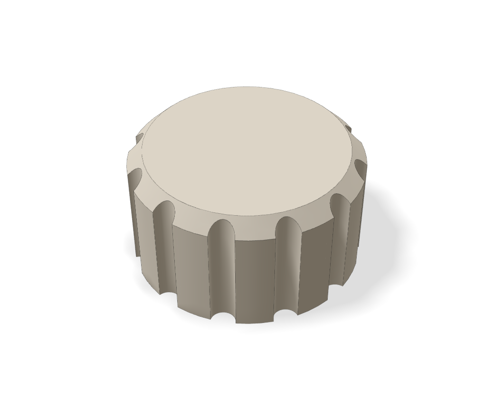
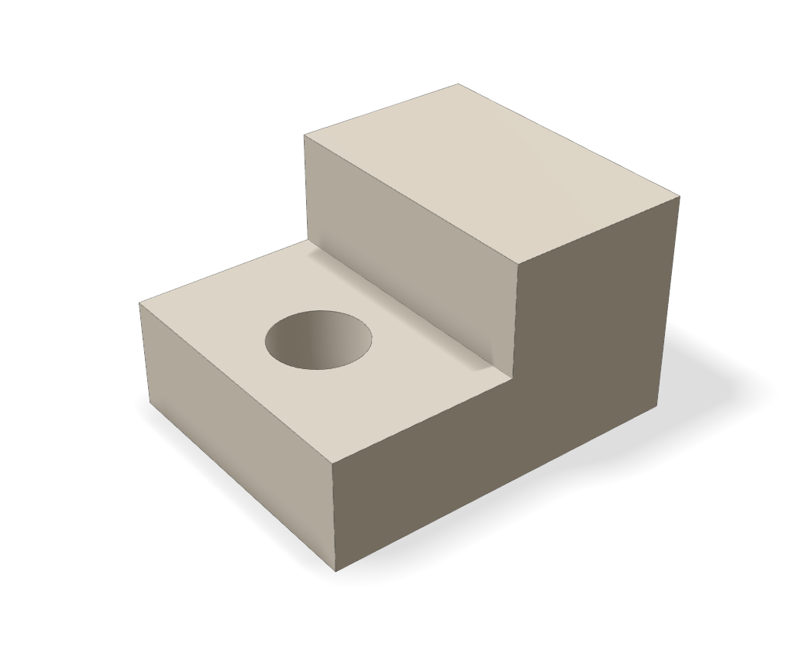

“…four 4 mm screw holes 6 mm in from each corner. Flat bottom, rounded corners.”

“…a grippy edge and a 6 mm hole underneath for the shaft, about 8 mm deep.”

“…a raised step over the right half, and a vertical through-hole in the lower ledge.”
Renders of exported STL files from real v2 builds. Each one conforms to its intent; none is approved for printing.